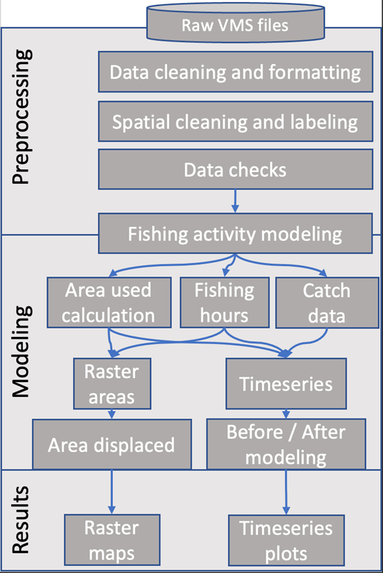
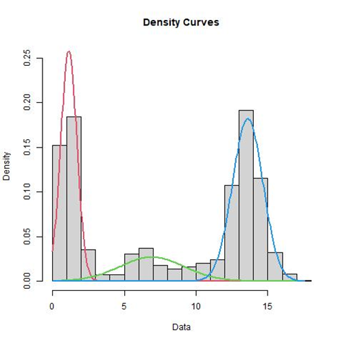

The Vessel Monitoring System is designed to monitor all industrial fishing vessels with a registered fishing permit under the Comisión Nacional de Acuacultura y Pesca (CONAPESCA). The system works by registering latitude, longitude, speed, and direction of each vessel on a hourly interval from 2008 to 2021. The full VMS dataset reports vessel’s name, unique ID, speed, and navigation bearing. After cleaning and standardization, the dataset has ~150 million data rows, representing tracks of 2287 industrial vessels, totaling approximately 35 gigabytes.
Data preprocessing
The process of downloading and wrangling data, the datasets’ structure, and a schematic view of the analysis workflow is explained in detail in hour GitHub repository documentation: https://cbmc-gcmp.github.io/dafishr/articles/Supplementary.html through a process that if fully reproducible on a personal computer with at least 16 GB of RAM memory. We coded all this pre-processing and follow-up analysis with the R programming language (R-Core-Team 2020) using the RStudio integrated development environment (RStudio-Team 2020). For convenience we created an R package “dafishr” that is available for free download in the dedicated repository GitHub page which contains all the dependencies and functions needed.
Data cleaning and formatting
Raw data can be downloaded by the year and are organized in several tabular files representing a monthly or by-weekly intervals. Then the preprocessing finds and eventually filter outs if needed: corrupted latitude, longitude, or speed entries that have obvious erroneous values; format dates and label corrupted ones. In the files the information stored is sometimes inconsistent and there are some errors within the rows, for example some corrupted dates or vessel codes. The most evident case came from the RLMSEP_2020/10.-OCTUBRE/16-31 OCT 2020.csv file which had all dates corrupted and we filtered it out from our analyses.
Spatial cleaning and labeling
After the cleaning step the preprocessing performs a spatial intersection with a vector file representing land to further eliminating dubious points falling inland, and after that creates a buffer of 0.025 degrees (~2.6 km) around ports to spatially label all vessel activity within port and exclude them from potential fishing activity modeling. The preprocessing then intersects all the coordinates with a polygon representing the Pacific portion of the Mexican Exclusive Economic Zone and all the Marine Protected Areas polygons (MPAs) in Mexico.
Data checks
After all the cleaning steps, a global check of dates is made to be sure that all data are in the correct units, and that no vessels have wrong hours of activities assigned to them (e.g., more than 24 hours in a day). Through this step, we realized that some tracks are reported in minutes, thus we homogenized all data by hours and for those points reported in minutes we averaged the latitude and longitude coordinates.
Modeling
Fishing activity modeling
VMS data can be modeled based on speed to infer potential fishing activities from vessel tracks and understand vessel behavior. For example, whether a vessel was cruising or if it was slowing down to deploy fishing gear. Not all the methods used to model fishing behavior are easily reproducible on a personal computer or are open source (Eastwood et al. 2007; Kroodsma et al. 2018). We used a trip-based Gaussian mixture model, which has a lower maximum error rate per trip, low false-positive rates, and good performance in terms of computing efficiency when applied to VMS data (Mendo et al. 2019). These characteristics allow an accurate estimation of the spatial distribution of active fishing while also being computationally efficient. We fitted the Gaussian mixture models using an expectation-maximization algorithm (Natale et al. 2015) to estimate the parameters of the multimodal speed distribution using the mixtools R package (Benaglia et al. 2009). We assumed three univariate normal distributions corresponding to three states of a vessel: fishing, deploying gear, and steaming. The starting values for the mean and standard deviation for each underlying distribution were estimated visually using a histogram showing the multimodal distribution of speed ( Figure 1 ) . We then defined the upper limit to the distribution for the fishing state by estimating the mean and adding two standard deviations to it. The model labels all positional records with speeds exceeding the upper limit as “not fishing” (encompassing deployment and steaming). Such labeling also grants a degree of conservatism to our model since deployment and steaming speeds sometimes overlap.
Fishing hours and catch data
We used only vessels that had permits for purse seine and longlines fishing gears targeting tuna, shark, and swordfish species. Once calculated the potential fishing hours from the Gaussian modeled activities, we created a timeseries of monthly total fishing hours by total number of active vessels. We then used the landings dataset to associate the same vessels by name to the catch they reported once they got back on port.

